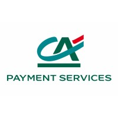

Mon lieu de formation pour le BTS [...]
ENSITECH
ENSITECH est une école du groupe ENSUP, spécialisée dans les domaines de l’informatique, notamment en Développement & Innovation et en Sécurité, Systèmes et Réseaux.
Les formations proposées s’étendent du Bac+2 au Bac+5, ce qui permet de poursuivre des études dans la continuité selon ses objectifs professionnels.
L’école est répartie sur plusieurs campus : Saint-Quentin-en-Yvelines, Cergy, Marseille et bientôt Nantes situés dans des zones proches d’entreprises actives.
L’enseignement met l’accent sur l’alternance, une formule qui combine apprentissage théorique à l’école et pratique en entreprise.
Un accompagnement est également proposé pour aider les étudiants dans leurs recherches d’alternance et dans la préparation de leurs projets professionnels.
Pour en découvrir plus sur ENSITECH !
[...] & mon Alternance !
Crédit Agricole Payment Services (CAPS)
Le Crédit Agricole Payment Services est une entité du Groupe Crédit Agricole dédiée à la gestion des activités liées aux paiements.
Ses missions incluent le pilotage de la stratégie, la conception d’offres innovantes, l’exploitation des plateformes de traitement, la supervision des opérations, et la sécurité des transactions du groupe.
J'ai eu la chance durant mon alternance de faire partie de l'équipe SCH (Sécurité, Continuité & Habilitations) de cette entité.
Cela m'a permis de découvrir les différents services de mon équipe lors de ma formation.
L’activité paiement joue un rôle central pour les banques du Groupe, en raison de ses enjeux commerciaux, financiers et technologiques.
CAPS contribue à faire des paiements un levier d’innovation et de création de valeur pour le Crédit Agricole.

Pour en découvrir plus sur CAPS !